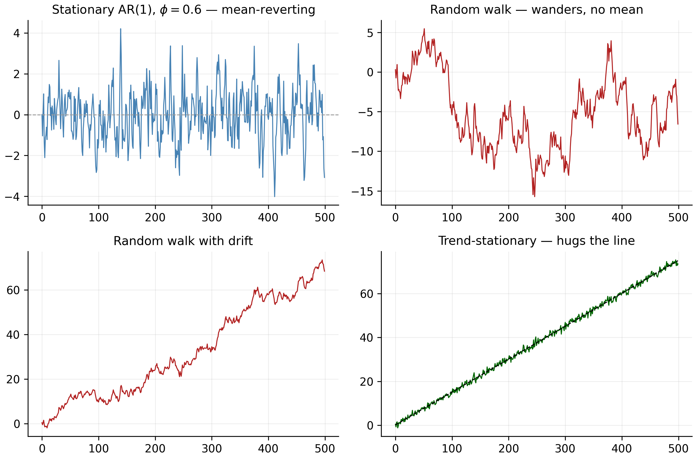

6 Unit-Root Nonstationarity
Chapter 1 made a move we never fully justified: we took log prices, which trend and wander, and differenced them into log returns, which do not. This chapter is the proper treatment.
The goal is to make precise what “non-stationary” means, to distinguish the two very different ways a series can trend upward — a stochastic trend (a unit root) versus a deterministic trend — and to test which one we face. This matters because the two demand opposite fixes: a unit root is removed by differencing, a deterministic trend by regression. Apply the wrong fix and you either leave non-stationarity in or manufacture spurious structure. Everything here is the foundation for the ARIMA model — which extends the ARMA models of Chapter 5 to non-stationary series — and the seasonal models that follow it.
The R code in this chapter uses tseries and urca (for the unit-root tests); Python uses statsmodels.
6.1 Stationarity and the AR(1), recalled
Two ideas from Chapter 3 carry this chapter. First, weak stationarity — constant mean and variance and an autocovariance \(\gamma_k\) that depends only on the lag (Equation 3.1) — is the property our models need, the one prices lack and returns possess. Second, the AR(1) model is the vehicle that turns the unit-root idea into something precise.
Write the AR(1) (from Section 3.5) with its coefficient called \(\phi\):
\[ y_t = \phi\, y_{t-1} + \varepsilon_t, \qquad \varepsilon_t \sim \text{white noise}(0,\sigma^2). \tag{6.1}\]
Its behaviour hinges entirely on \(\phi\). If \(|\phi| < 1\) the shocks decay (\(\rho_k = \phi^k\)) and the series is stationary and mean-reverting. If \(|\phi| = 1\) the shocks never decay: this is the unit-root case — the series is non-stationary and its disturbances are permanent. The name comes from writing Equation 6.1 as \((1 - \phi L)y_t = \varepsilon_t\) with \(L\) the lag operator; the root of \(1 - \phi z = 0\) is \(z = 1/\phi\), which sits on the unit circle exactly when \(\phi = 1\). That single boundary case, \(\phi = 1\), is the entire subject of this chapter.
6.2 The random walk
A random walk is a series whose next value is today’s value plus a random shock. It has a unit root, so shocks are permanent and it never reverts to a fixed mean.
Setting \(\phi = 1\) gives the random walk, the canonical unit-root process and the textbook model for a log price under market efficiency:
\[ y_t = y_{t-1} + \varepsilon_t = y_0 + \sum_{j=1}^{t}\varepsilon_j . \tag{6.2}\]
Two properties define the unit-root problem. First, its variance grows without bound: \(\operatorname{Var}(y_t) = t\,\sigma^2\), so there is no fixed variance. Second, because \(y_t\) accumulates all past shocks, a shock today shifts the entire future path permanently; the series has no level to revert to. Its theoretical autocorrelations stay near \(1\) even at long lags — the slowly-decaying sample ACF (see Section 3.2) is the classic fingerprint of a unit root.
The best one-step forecast of a random walk is simply today’s value, \(\hat y_{t+1} = y_t\). That is exactly why, when we forecast the July holdout, the point forecast of a near-random-walk log price will look flat.
6.3 The random walk with drift
Real log prices trend upward. Adding a constant \(\mu\) gives the random walk with drift:
\[ \begin{aligned} y_t &= \mu + y_{t-1} + \varepsilon_t \\ &= y_0 + \underbrace{\mu t}_{\text{deterministic trend}} + \underbrace{\sum_{j=1}^{t}\varepsilon_j}_{\text{stochastic trend}} . \end{aligned} \tag{6.3}\]
Now the series carries two trends at once: a straight-line deterministic component \(\mu t\) and a wandering stochastic component. The drift \(\mu\) is the average one-period change — for a log price, the average log return (about \(0.05\%\)/day for the S&P 500, from Table 2.1). This is our working model for a log-price series.
6.4 Trend-stationary versus difference-stationary
Here is the distinction that trips up practitioners, because two series can look almost identical yet be fundamentally different. Compare the random walk with drift to a trend-stationary process,
\[ y_t = \alpha + \beta t + \varepsilon_t , \tag{6.4}\]
with \(\varepsilon_t\) stationary. Both slope upward, but their trends are made of different stuff:
- Trend-stationary: the trend is purely deterministic. Deviations from the line are transient; the series always returns to it. Shocks have no lasting effect. The fix is to regress out the trend.
- Difference-stationary (unit root): the trend is partly stochastic. Shocks accumulate and permanently move the path. The fix is to difference: \(\Delta y_t = \mu + \varepsilon_t\) is stationary.
Using the wrong remedy is costly: differencing a trend-stationary series injects a spurious moving-average unit root; detrending a true unit-root series leaves the stochastic trend untouched. Figure 6.1 draws one path of each of four processes from the same shocks, so you can see how they relate.

set.seed(42)
n <- 500; e <- rnorm(n) # common shocks
ar1 <- as.numeric(stats::filter(e, 0.6, method = "recursive")) # phi = 0.6
rw <- cumsum(e) # random walk
rwd <- cumsum(0.15 + e) # random walk + drift
trend <- 0.15 * (1:n) + e # trend-stationary
op <- par(mfrow = c(2, 2), mar = c(3, 4, 2, 1))
plot(ar1, type = "l", main = "Stationary AR(1)"); abline(h = 0, lty = 2)
plot(rw, type = "l", main = "Random walk")
plot(rwd, type = "l", main = "Random walk with drift")
plot(trend, type = "l", main = "Trend-stationary"); lines(0.15 * (1:n), lty = 2)
par(op)import numpy as np, matplotlib.pyplot as plt
rng = np.random.default_rng(42); n = 500; e = rng.standard_normal(n)
ar1 = np.zeros(n)
for t in range(1, n): ar1[t] = 0.6*ar1[t-1] + e[t] # stationary AR(1)
rw, rwd = np.cumsum(e), np.cumsum(0.15 + e) # RW, RW + drift
trend = 0.15*np.arange(1, n+1) + e # trend-stationary
fig, ax = plt.subplots(2, 2, figsize=(9, 6))
for a,(y,t) in zip(ax.ravel(), [(ar1,"Stationary AR(1)"),(rw,"Random walk"),
(rwd,"RW with drift"),(trend,"Trend-stationary")]):
a.plot(y); a.set_title(t)
plt.tight_layout(); plt.show()The random walk with drift (bottom-left) and the trend-stationary series (bottom-right) both climb, but only the second is anchored to its line. That visual ambiguity is why we need a formal test.
6.5 Integration order and differencing
We summarise this with the order of integration. A series is \(I(d)\) if it must be differenced \(d\) times to become stationary. A stationary series is \(I(0)\); a random walk is \(I(1)\). Formally, \(y_t\) is \(I(1)\) if \(y_t\) is non-stationary but \(\Delta y_t = y_t - y_{t-1}\) is \(I(0)\).
This is exactly our data: a log price is \(I(1)\), and its first difference — the log return — is \(I(0)\). That single sentence is the theoretical justification for the entire move we made in Chapter 1.
If a series is already \(I(0)\), differencing it again does not “make it more stationary” — it introduces a non-invertible moving-average component and inflates variance. Our returns are \(I(0)\); we difference the price once and stop.
6.6 Testing for a unit root
6.6.1 The Dickey–Fuller idea
The test follows directly from the AR(1). Subtract \(y_{t-1}\) from both sides of Equation 6.1:
\[ \Delta y_t = (\phi - 1)\,y_{t-1} + \varepsilon_t \;\equiv\; \gamma\, y_{t-1} + \varepsilon_t . \tag{6.5}\]
A unit root (\(\phi = 1\)) is now the hypothesis \(\gamma = 0\); stationarity is \(\gamma < 0\). So the Dickey–Fuller test regresses the change \(\Delta y_t\) on the level \(y_{t-1}\) and checks whether the coefficient is significantly negative. The catch — and the reason it is its own test — is that under the null the regressor \(y_{t-1}\) is a non-stationary random walk, so the usual \(t\)-statistic does not have a \(t\) distribution. It follows a non-standard Dickey–Fuller distribution, whose critical values are more negative than the familiar ones (around \(-2.86\) at \(5\%\) with a constant, versus \(-1.96\)). Using ordinary \(t\)-tables here finds stationarity far too often.
Two elaborations make it usable. First, we add lagged differences to absorb serial correlation — the Augmented Dickey–Fuller (ADF) test:
\[ \Delta y_t = \gamma\, y_{t-1} + \sum_{i=1}^{p}\beta_i \Delta y_{t-i} + (\text{deterministic terms}) + \varepsilon_t . \tag{6.6}\]
Second, the deterministic terms must match the series: none, drift (constant), or trend (constant plus time trend). Choosing the spec is not a technicality — it changes the verdict, as the S&P 500 is about to show.
6.6.2 The KPSS test: the opposite null
The Dickey–Fuller test has a bias we should worry about: its null hypothesis is a unit root, and because unit-root tests have low power, when the data are uninformative the test simply fails to reject — it defaults to declaring non-stationarity. A test built the other way around guards against this. The KPSS test (Kwiatkowski, Phillips, Schmidt and Shin, 1992) takes stationarity as the null hypothesis and a unit root as the alternative — the mirror image of Dickey–Fuller.
Its logic is a variance test on accumulated residuals. Decompose the series into a deterministic part, a random-walk part, and a stationary error:
\[ y_t = \xi t + r_t + \varepsilon_t, \qquad r_t = r_{t-1} + u_t, \;\; u_t \sim (0, \sigma_u^2). \tag{6.7}\]
The random-walk term \(r_t\) exists only if \(\sigma_u^2 > 0\). So the null of stationarity is precisely \(H_0: \sigma_u^2 = 0\) (the random walk vanishes, leaving \(y_t\) stationary around \(\xi t\)), against \(H_1: \sigma_u^2 > 0\).
To test it, regress \(y_t\) on the deterministic terms — a constant for the level test, a constant plus trend for the trend test — and keep the residuals \(e_t\). Form their partial sums \(S_t = \sum_{i=1}^{t} e_i\) and compute
\[ \text{KPSS} = \frac{1}{n^2}\, \frac{\sum_{t=1}^{n} S_t^{2}}{\hat\lambda^2}, \tag{6.8}\]
where \(\hat\lambda^2\) is a long-run-variance estimate of the residuals (a Newey–West / Bartlett-kernel sum that corrects for serial correlation, playing the same role the augmenting lags played in ADF).
The intuition is clean. If \(y_t\) is stationary, its residuals hover around zero and their running total \(S_t\) stays bounded, so \(\sum S_t^2\) is small and the statistic is small. If \(y_t\) has a unit root, the residuals are persistent, \(S_t\) itself wanders like a random walk, \(\sum S_t^2\) explodes, and the statistic is large. We therefore reject stationarity for large values — the upper-tail \(5\%\) critical values are \(0.463\) for the level test and \(0.146\) for the trend test.
Because ADF and KPSS have opposite nulls, running them together is a standard confirmatory device that sidesteps either one’s weakness:
- ADF rejects and KPSS fails to reject → agreeing evidence of stationarity.
- ADF fails to reject and KPSS rejects → agreeing evidence of a unit root.
- They disagree, or both reject → inconclusive: the data are uninformative, or something else (a structural break, or the slow-moving volatility we meet in gold) is confusing these mean-focused tests.
This is exactly why the S&P 500 — whose ADF-with-trend result is maddeningly borderline — needs KPSS to reach a verdict, as we now see.
6.6.3 Applied to the S&P 500
We run ADF (drift, then trend) and the complementary KPSS test on the S&P 500 log price and its return.
library(tseries); library(urca)
load_logprice <- function(sym) {
df <- read.csv(sprintf("data/%s.csv", sym)); df$Date <- as.Date(df$Date)
df <- df[df$Date <= as.Date("2026-07-01"), ]
log(df$Adjusted) # numeric vector of log prices
}
lp <- load_logprice("SPX")
k <- trunc((length(lp) - 1)^(1/3)) # Schwert lag length (~15)
summary(ur.df(lp, type = "drift", lags = k)) # ADF, constant only
summary(ur.df(lp, type = "trend", lags = k)) # ADF, constant + time trend
kpss.test(lp, null = "Level") # KPSS, H0: level-stationary
kpss.test(lp, null = "Trend") # KPSS, H0: trend-stationary
kpss.test(diff(lp)) # KPSS on the returnimport pandas as pd, numpy as np
from statsmodels.tsa.stattools import adfuller, kpss
def load_logprice(sym):
df = pd.read_csv(f"data/{sym}.csv", parse_dates=["Date"]).set_index("Date")
df = df[df.index <= "2026-07-01"]
return np.log(df["Adjusted"]).values
lp = load_logprice("SPX")
adfuller(lp, regression="c") # ADF, constant
adfuller(lp, regression="ct") # ADF, constant + trend
kpss(lp, regression="c") # KPSS, level
kpss(lp, regression="ct") # KPSS, trend
kpss(np.diff(lp), regression="c") # KPSS on the returnThe estimated statistics tell a layered story:
| Series & spec | ADF stat | ADF 5% crit | KPSS stat | KPSS 5% crit | Reading |
|---|---|---|---|---|---|
| S&P log price — drift | −0.04 | −2.86 | 24.3 (level) | 0.46 | fails to reject unit root; KPSS rejects stationarity → non-stationary |
| S&P log price — trend | −3.57 | −3.41 | 0.77 (trend) | 0.15 | ADF borderline rejects; KPSS rejects trend-stationarity → not trend-stationary |
| S&P log return — drift | −16 | −2.86 | 0.04 (level) | 0.46 | ADF rejects unit root; KPSS fails to reject → stationary, \(I(0)\) |
The two ADF specs on the price disagree, and that is the lesson. With a drift term the statistic is essentially zero (\(-0.04\)), nowhere near \(-2.86\): we comfortably fail to reject the unit root. With a trend term it drops to \(-3.57\), just past the \(5\%\) value of \(-3.41\) — a borderline rejection that would tempt you to call the S&P 500 trend-stationary. This is the ambiguity flagged in Chapter 1: the index’s drift is so steady that a straight line fits its climb almost as well as a random walk does.
KPSS breaks the tie. Because its null is stationarity, we read a large statistic as evidence against stationarity. For the log price the level statistic is about \(24\) (versus \(0.46\)) and even the trend statistic is about \(0.77\) (versus \(0.15\)) — KPSS rejects both level- and trend-stationarity. Combined with ADF failing to reject the unit root under the sensible drift spec, the verdict is decisive: the S&P 500 log price is difference-stationary, \(I(1)\), not trend-stationary. The borderline ADF-with-trend result was a false lead.
Differencing settles everything. For the log return the ADF statistic is about \(-16\) (a crushing rejection of the unit root) and KPSS about \(0.04\) (nowhere near rejecting stationarity). Both agree: the return is \(I(0)\). The same pattern holds for every price series in our data — prices are \(I(1)\), returns are \(I(0)\) — the empirical close of the loop opened in Chapter 1.
6.6.4 The pattern holds for every series
The S&P 500 is the worked example, but the conclusion is not cherry-picked. Running the same two tests on all six series — price and return — gives a uniform verdict.
run_tests <- function(sym) {
lp <- load_logprice(sym); k <- trunc((length(lp) - 1)^(1/3))
c(ADF_price = ur.df(lp, type = "drift", lags = k)@teststat[1],
KPSS_price = kpss.test(lp)$statistic,
ADF_return = ur.df(diff(lp), type = "drift", lags = k)@teststat[1],
KPSS_return = kpss.test(diff(lp))$statistic)
}
round(t(sapply(c("AAPL","MSFT","AMZN","SPX","GLD","GCF"), run_tests)), 2)from statsmodels.tsa.stattools import adfuller, kpss
def run_tests(sym):
lp = load_logprice(sym)
return dict(ADF_price=adfuller(lp, regression="c")[0], KPSS_price=kpss(lp)[0],
ADF_return=adfuller(np.diff(lp), regression="c")[0],
KPSS_return=kpss(np.diff(lp))[0])
pd.DataFrame([run_tests(s) for s in ["AAPL","MSFT","AMZN","SPX","GLD","GCF"]])The estimated statistics (ADF 5% crit \(-2.86\); KPSS level 5% crit \(0.463\)):
| Series | ADF price | KPSS price | Price | ADF return | KPSS return | Return |
|---|---|---|---|---|---|---|
| AAPL | −0.38 | 24.9 | \(I(1)\) | −15.3 | 0.04 | \(I(0)\) |
| MSFT | −0.90 | 25.3 | \(I(1)\) | −16.1 | 0.13 | \(I(0)\) |
| AMZN | −1.00 | 23.9 | \(I(1)\) | −16.1 | 0.09 | \(I(0)\) |
| SPX | −0.04 | 24.3 | \(I(1)\) | −15.9 | 0.04 | \(I(0)\) |
| GLD | +0.87 | 14.6 | \(I(1)\) | −15.9 | 0.51 | \(I(0)^*\) |
| GCF | +0.99 | 15.4 | \(I(1)\) | −15.9 | 0.51 | \(I(0)^*\) |
For every series the log price is \(I(1)\) — ADF fails to reject a unit root (the two gold prices even give positive statistics, so trending they barely resemble a mean at all) while KPSS decisively rejects stationarity. Differencing fixes all of them: every return has an ADF statistic near \(-16\) and a small KPSS statistic. Prices in, returns out — the workflow is universal.
The asterisks on gold are an honest wrinkle worth teaching. Gold’s return KPSS statistics (\(0.51\)) sit just above the \(5\%\) critical value of \(0.463\), though comfortably below the \(1\%\) value of \(0.739\), while ADF rejects a unit root emphatically (\(-15.9\)). The tests only appear to conflict: ADF tests the mean (no unit root — the return does not wander), whereas KPSS is picking up gold’s slow-moving volatility, which its long-run-variance estimator reads as mild non-stationarity. This is not a unit root; it is heteroskedasticity — exactly the time-varying variance the GARCH chapters are built to model. Gold previews the next act.
Unit-root tests have low power: they struggle to tell a true unit root (\(\phi=1\)) from a very persistent stationary process (\(\phi=0.98\)), so failing to reject is weak evidence, not proof. They are also sensitive to structural breaks and to lag and deterministic-term choices. Treat them as one input alongside the plot, the slowly-decaying ACF, and economic reasoning.
6.7 Why this matters downstream
This chapter is the hinge between the descriptive early chapters and the modelling that carries our objective. Because our returns are \(I(0)\), we can fit stationary models — AR (already, in Section 3.5), MA, and ARMA — to them directly, with no differencing. Because our log prices are \(I(1)\), when we model a price level we difference it first, which is exactly what the “I” in ARIMA stands for — the general unit-root model that extends ARMA. And the random-walk result of Section 6.2 sets the honest benchmark for forecasting: since a log price is close to a random walk, the naive “tomorrow equals today” forecast is genuinely hard to beat.
6.8 Concept check
Decide first, then expand each answer.
Q1. A random walk \(y_t = y_{t-1} + \varepsilon_t\) is non-stationary because:
- (a) its mean grows steadily over time.
- (b) its variance grows without bound (\(\operatorname{Var}(y_t) = t\sigma^2\)) and shocks are permanent.
- (c) it always trends upward.
- (d) it has a deterministic time trend.
(b). The mean of a driftless random walk is constant (\(y_0\)); it is the variance that grows with the horizon, and every shock shifts the whole future path permanently. That is what a unit root does.
Q2. To make an upward-trending series stationary, you should difference it when the trend is , and detrend by regression when the trend is :
- (a) deterministic; stochastic.
- (b) stochastic (a unit root); deterministic.
- (c) both cases call for differencing.
- (d) both cases call for regression.
(b). A stochastic (unit-root) trend is removed by differencing; a deterministic trend is removed by regressing it out. Using the wrong remedy either leaves the non-stationarity in or manufactures a spurious moving-average unit root.
Q3. The null hypothesis of the Augmented Dickey–Fuller (ADF) test is that the series:
- (a) is stationary.
- (b) has a unit root (is non-stationary).
- (c) is white noise.
- (d) has normal residuals.
(b). ADF tests \(\gamma = 0\) (unit root) against \(\gamma < 0\) (stationary). Because the regressor is non-stationary under the null, the statistic follows the special Dickey–Fuller distribution, not a \(t\).
Q4. For the S&P 500 log price, ADF-with-trend is borderline but KPSS rejects both level- and trend-stationarity (Table 6.1). The sound conclusion is:
- (a) the price is trend-stationary.
- (b) the price is difference-stationary, \(I(1)\) — running ADF and KPSS together resolves the ambiguity that either test alone leaves.
- (c) the tests contradict, so nothing can be concluded.
- (d) the price is white noise.
(b). ADF (null = unit root) fails to reject under the sensible drift spec, and KPSS (null = stationarity) rejects; together they point decisively to a unit root. The borderline ADF-with-trend was a false lead.
Q5. Our log prices are \(I(1)\) and log returns are \(I(0)\). If you difference the returns again, you:
- (a) make them “even more stationary.”
- (b) over-difference — introducing a non-invertible MA unit root and inflating the variance.
- (c) turn them into a random walk.
- (d) change nothing.
(b). An \(I(0)\) series should not be differenced. Differencing once takes the \(I(1)\) price to the \(I(0)\) return; a second difference over-differences and harms the model.
Q6. Gold returns give a strong ADF rejection of a unit root but a marginal KPSS rejection of stationarity (Table 6.2). This most likely reflects:
- (a) a unit root in the mean after all.
- (b) slow-moving volatility (heteroskedasticity) that KPSS’s variance-based statistic detects — not a unit root in the mean.
- (c) a data error.
- (d) a deterministic trend.
(b). ADF tests the mean (no unit root — the return does not wander); KPSS picks up gold’s time-varying variance. It is heteroskedasticity, the very thing the GARCH stage of the toolkit is built to model.
- Weak stationarity (Equation 3.1) — constant mean, constant variance, distance-only autocovariance — is what our models need.
- An AR(1) is stationary when \(|\phi|<1\) and has a unit root when \(\phi=1\); a unit root makes shocks permanent and the variance grow without bound.
- A random walk (\(\pm\) drift) is the canonical \(I(1)\) series; its best one-step forecast is today’s value.
- Trend-stationary (fix by regression) and difference-stationary (fix by differencing) look alike but are opposites.
- Test with ADF (null = unit root) and KPSS (null = stationarity) together; the S&P 500 needs both, because ADF-with-trend alone is misleadingly borderline (Table 6.1).
- Our log prices are \(I(1)\), returns are \(I(0)\) — the justification for modelling returns, and the “I” in the ARIMA models still to come.